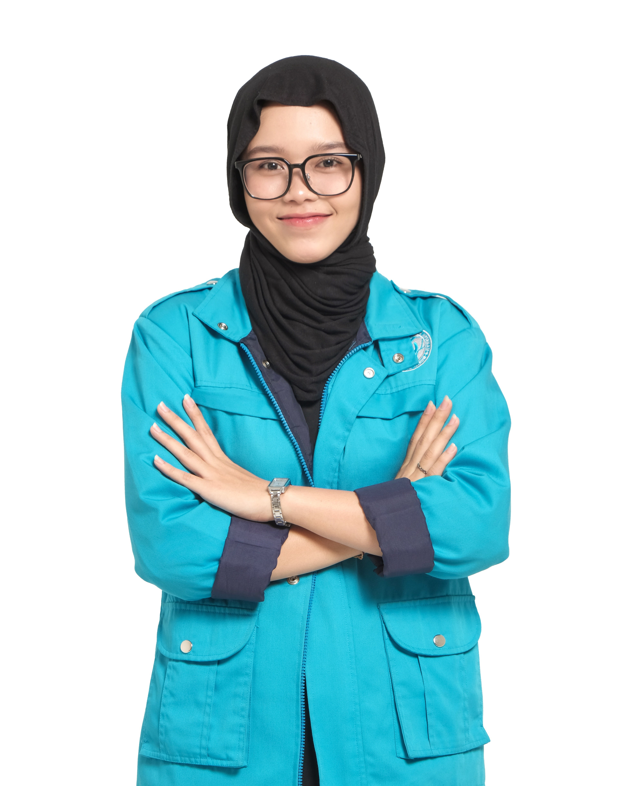

| photography | |
Hi, I'm Zara! |
|
| my full name is azhara rahma effendi. my age is 21 years old in December 2024. |  |
| I am an Information Systems student at Telkom University class of 2022, with interests in business process and digital design. Business processes help organizations improve efficiency and performance, while digital design creates interactive visual elements, such as UI/UX. Combining the two, I am interested in roles such as business analyst or UI/UX designer, where creativity and logic can be combined to solve business problems in the digital era. | |